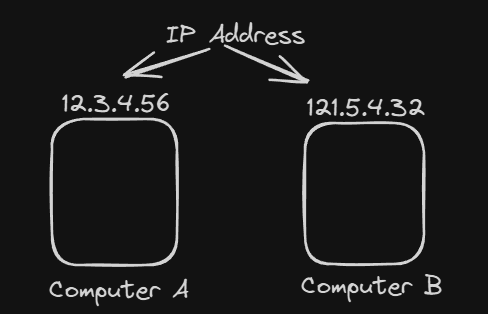
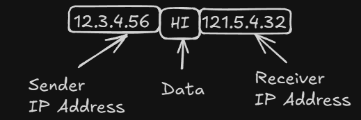
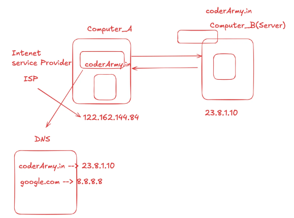
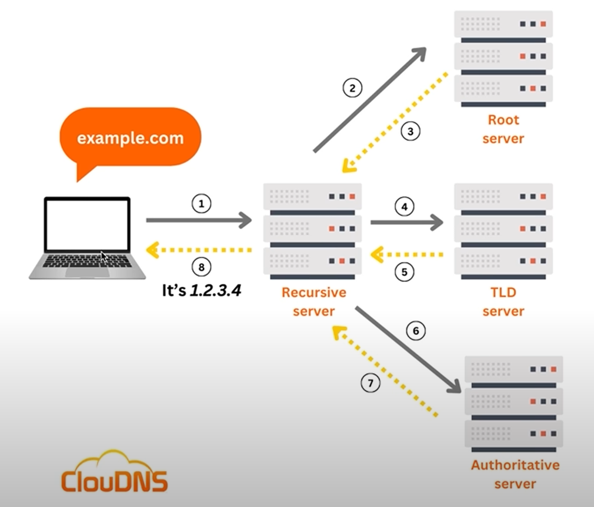
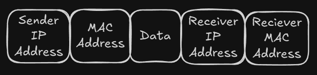
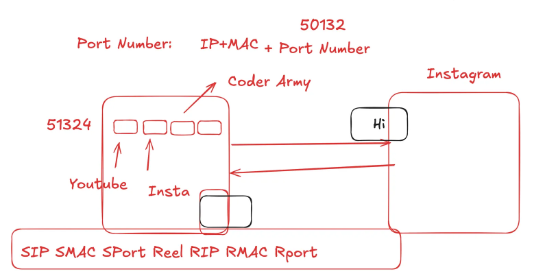

We use Internet to communicate between two devices or allow data transfer. In simple words the data transfer is just like sending post through post office. e.g.,If I want to send an Iphone to someone then,
First, I will pack the Iphone in a box.
Label the box with my address (i.e. Senders Address) followed by the buyers address (i.e. Receivers Address)
Send it to the Post Office.
The buyer will receive it.
Like this if we want to send someone anything then we need their Address likewise in Internet we need the devices IP Address.
IP Address

For sending any message we require:
Senders IP Address
Date/Message
Recievers IP Address

IP Address is Dynamic: When we connect Internet, we have IP Address given by someone which gives us an identity to the Internet. This is not a permanent address. Whenever we disconnect the Internet, the IP Address will be taken away and a new IP Address will be given, and the IP Address we were having before will be given to some another person's server.
To check what is your IP Address visit website:
whatismyipaddress.com
Who assigns IP Address?
ISP(Internet Service Provider) gives us IP Address.
When we go to browser and type Coder Army then we get the website but how we get it without knowing Coder Army's IP Address?
DNS (Domain Name System)
DNS maintains a book where there are IP Address of the websites so we do not need to know the IP Address.

Likewise we can use a website: nslookup.io. Here we can search any website IP Addresses.
The use of DNS is to collect all the IP Addresses of the websites which are hard for a human to remember. So that we could just remember the name of the website intead of its IP Address.
In-depth working of DNS
If you type google.com then first it will check whether your device is having google IP Address, if yes then it will not go to DNS and directly link you with the google IP Address.
But if you do not have IP Address in your device then, it comes to the Recursive Server/DNS Resolver. First it will check if it is present here if yes, then it will directly reply back to the server.
If not, then it will call your Root server. There are total 13 Root server in the world. So which ever is your nearnest will get connect to your server. If your website is not available in the root server then it will check the domain of the website (like if it is google.com, google.in, google.io) then based on that Root server will deploy its TLD Address to the Recursive server.
When Recursive server will know the domain(i.e., .com) then it will search it in TLD server.TLD(Top Level Domain) will not give the address directly. TLD server then deploy to Recursive Server and finally request the Authoritative server and gives the IP Address.

Problem in Data Transfer and MAC Address
Suppose we want personal chat of someone on instagram. But due to some reasons instagram server reply late(e.g., for 5 minutes) and while that time our internet got down. So ISP will give your IP Address to someone else therefore your personal chats also gone to that unknown person. To prevent from this situation we use MAC Address.
MAC Address
MAC Address(Media Access Control) is a permanent address and every device have their own.It is the actual address of your device and nobody could take it. It is permanently attached to your device.
When we send request MAC Address will also go with sender and receiver address.

So if IP Address is same but response can't go to someone else if MAC Address is different.
Port Number
There are multiple tabs open in our browser and we watch reels in one tab. When the response come from Instagram server with IP+MAC but how it will know on which tab it should go so for that we have Port Number.
On the basis of Port Number it will decide on which tab it should go.

IPv4 and IPv6
IPv4
An IPv4 (Internet Protocol version 4) address is the classic IP address format everyone is used to seeing. Structure: It's a 32-bit number. To make it readable for humans, we divide it into four 8-bit sections, and write each section as a decimal number from 0 to 255.
Example: 172.217.16.142(one of Google's addresses). The Big Problem (The Why): A 32-bit number means there's a hard limit on the total number of possible addresses: 2^32, which is about 4.3 billion.
Why they dont take 2^64?
They think of future that 2^64 may become less for the devices in future so they take 2^128.
IPv6
IPv6 (Internet Protocol version 6) is the next generation of the Internet Protocol. Its primary purpose was to solve the address exhaustion problem of IPv4.
An example of a full IPv6 address: 2001:0db8:85a3:0000:0000:8a2e:0370:7334
It's broken down into:
Eight groups of four Hexadecimal characters.
The groups are seperated by colons(:).
The fundamental difference between IPv4 and IPv6 is the size of the address:
IPv4: Uses a 32-bit address, giving us ~4.3 billion unique addresses.
IPv6: Uses a 128-bit address.
MAC Address
A MAC address is a 48-bit number. To make it readable for humans, it's typically written as 12 hexadecimal digits.
The most common ways you'll see it displayed are:
Colon-Separated (Most Common): 3C:22:FB:A3:B4:C5
Hyphen-Separated (Common on Windows): 3C-22-FB-A3-B4-C5
Period-Separated (Used by Cisco and other network gear): 3c22.fba3.b4c5
No Separators (Less common, seen in some software): 3C22FBA3B4C5
We have many MAC Addresses on Windows. For this we need to write the command on the terminal: ipconfig/all
The reason why we have many MAC Address for a single device is so that we can send data in many ways:
Bluetooth
USB Cable
Airdrop(for IOS User)
through Port Number
Port Number
A port number is a 16-bit unsigned integer. Can't be negative.
Because it's a 16-bit number, the total number of possible ports is 2^16, which equals 65,536.